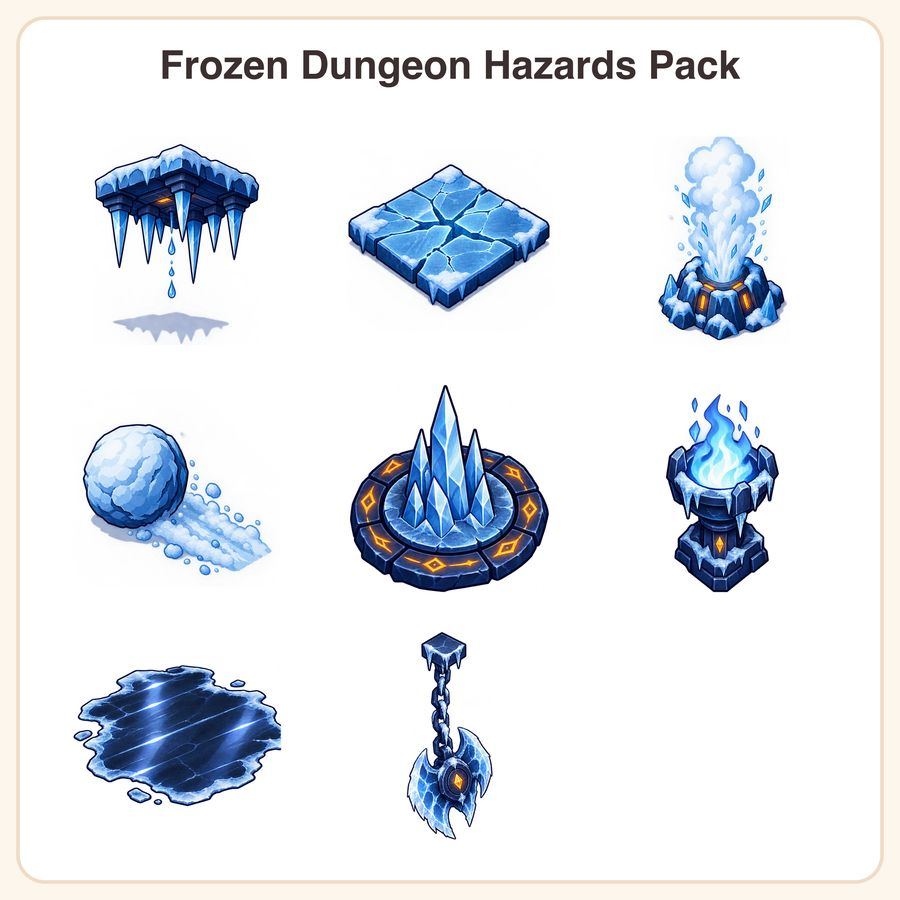

$6.99
Buy nowGet it on itch.ioView on EtsyYour winter dungeon looks cold. Now make it dangerous. Eight drop-in ice hazards built to one shared 128px tile grid, so every trap lines up with the level you already have - no re-drawing, no style clash. WHAT'S INCLUDED (8 hazards, 20+ sprite files) - Spiked icicle ceiling trap - 2 states (armed + fallen), with drip and cast shadow - Cracking thin-ice floor tile - 3 damage stages - Frozen geyser vent - with freezing steam burst - Rolling snowball boulder - plus packed-snow trail piece - Ice spike pressure plate - ringed with amber warning runes - Frost brazier - pale blue cold flame - Slippery black-ice patch - decal with glossy highlight streaks - Frozen chain-and-pendulum blade - rime-coated STYLE Clean vector game art: bold 3px dark-indigo outlines, 4-step cel shading, and a cold palette of glacier blue, frost white and deep indigo with one warning-amber accent so players read the danger instantly. Consistent 3/4 top-down perspective, transparent backgrounds throughout. FILES & FORMATS - PNG - fully scalable vectors, editable in Illustrator, Inkscape, Affinity Designer or Figma - PNG - 512 x 512 px, transparent background, ready for Unity, Godot, GameMaker or Construct - Delivered as one instant-download ZIP HOW TO USE Unzip, drag the PNGs straight into your engine's sprite folder, or open the PNG to recolor, restyle or export at any resolution your project needs. The shared 128px grid means hazards snap cleanly into existing tilemaps. LICENSE Personal and small-business commercial use, including paid games and apps, up to 500 units sold or distributed. You may modify and recolor the assets. You may not resell, share or redistribute the source files as-is or as part of another asset pack. Need a larger commercial tier? Message me and we'll sort it out. A NOTE ON HOW THESE WERE MADE These designs were created by this shop using AI tools as part of the process, then reviewed, cleaned, redrawn as true vectors and color-matched by hand so every piece shares the same outline weight, shading steps and grid alignment. This is a digital download - no physical item will be shipped. Because of that, all sales are final, but if a file gives you trouble, message me and I'll make it right.